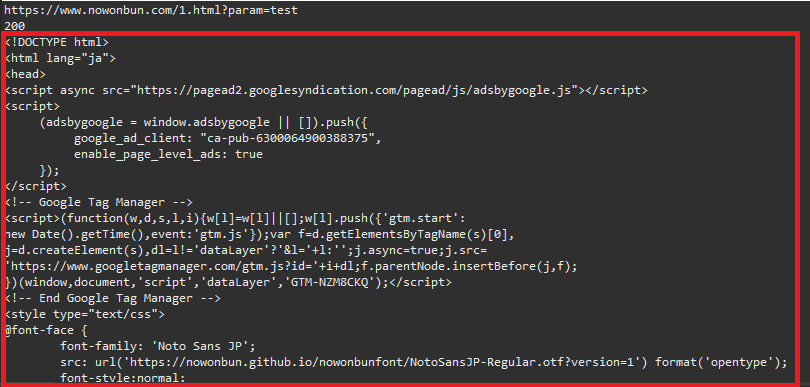
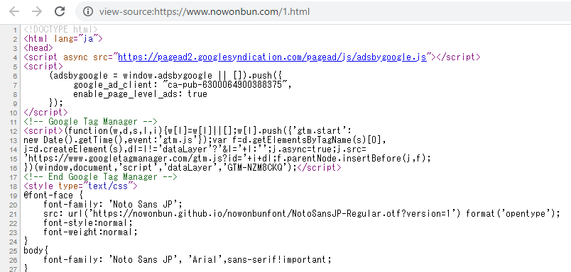

[Java] HttpConnectionを利用してウェブページを取得する方法
こんにちは。明月です。
この投稿はJavaでHttpConnectionを利用してウェブページを取得する方法に関する説明です。
我々がウェブサービングをするとたまにウェブのデータをダウンロードしてデータ用で使いたい時があります。特にウェブページではなくてもRSSやウェブのデータなどを扱いたい時があります。
その時にソケット通信でデータを受け取ることが可能です。なぜならウェブサーバーもソケットサーバーなので、一般通信ソケットで通信が出来ます。でも、ただソケット通信でデータを取得するためには通信プロトコルを合わせてヘッダー要請を送らなければならないです。
でも、ソケット通信でもヘッダーは自動設定してブラウザみたいにurlだけでデータを取得するクラスがありますが、それがHttpUrlConnectionといいます。
HttpConnectionの場合はウェブレンダリングはしないので、JavascriptのAjaxの動的なデータや計算値などはなくて、純粋なウェブサーバーから受け取ったデータだけ取得できます。
import java.io.BufferedReader;
import java.io.DataOutputStream;
import java.io.InputStreamReader;
import java.net.HttpURLConnection;
import java.net.URL;
import java.util.HashMap;
import java.util.Map;
public class HttpConnectionExample {
// Requestメソッド定義
public enum HttpMethod {
GET, POST
}
// HttpURLConnectionを実行する関数
public static String getRequest(String url, HttpMethod method, Map<String, Object> parameter) {
try {
String param = null;
// パラメータがある場合、「キー=値&キー=値」の形式で組み合わせる。
if (parameter != null) {
// バッファ
StringBuffer sb = new StringBuffer();
// パラメータはマップタイプで受け取る。
for (String key : parameter.keySet()) {
// 各パラメータの区切りは&でする。
if (sb.length() > 0) {
sb.append("&");
}
// キー=値
sb.append(key);
sb.append("=");
sb.append(parameter.get(key));
}
// param変数にバッファのデータを格納
param = sb.toString();
} else {
// パラメータが無ければ、ただ文字がないStringタイプに格納
param = "";
}
// Http methodがGET方式の場合、パラメータデータをurlアドレスの後ろに付ける。
if (HttpMethod.GET.equals(method)) {
// urlでパラメータがある場合にパラメータ後につける。
if (url.contains("?")) {
url += "&" + param;
} else {
url += "?" + param;
}
}
// urlをコンソールに出力
System.out.println(url);
// URLインスタンスを生成
URL uri = new URL(url);
// urlを通ってHttpURLConnectionインスタンスを生成する。
HttpURLConnection connection = (HttpURLConnection) uri.openConnection();
// ヘッダーのメソッドを定義する。
connection.setRequestMethod(method.toString());
// ヘッダーのContentTypeを定義する。
connection.setRequestProperty("ContentType", "application/x-www-form-urlencoded");
// Http methodがPOST方式の場合、ヘッダーにパラメータを付ける。
if (HttpMethod.POST.equals(method)) {
// コネクションのheaderのStreamを使う設定。(Getの場合にいらない)
connection.setDoOutput(true);
// OutputStreamを受け取ってパラメータを付ける。
try (DataOutputStream output = new DataOutputStream(connection.getOutputStream())) {
output.writeBytes(param);
output.flush();
}
}
// プロトコルの返却コードを受け取る。(200なら正常)
int code = connection.getResponseCode();
// コンソール出力
System.out.println(code);
// StreamでHtmlのデータを受け取る。
try (BufferedReader input = new BufferedReader(new InputStreamReader(connection.getInputStream()))) {
// バッファ設定
String line;
StringBuffer buffer = new StringBuffer();
// データをライン単位で受け取る。
while ((line = input.readLine()) != null) {
// バッファに格納
buffer.append(line);
// 改行
buffer.append("\r\n");
}
// Htmlデータを返却する。
return buffer.toString();
}
} catch (Throwable e) {
// ExceptionタイプをRuntimeExceptionタイプに変換
throw new RuntimeException(e);
}
}
// 実行関数
public static void main(String[] args) {
// パラメータマップ
Map<String, Object> parameter = new HashMap<>();
// 別に要らないですが。。。
parameter.put("param", "test");
// https://www.nowonbun.com/1.html?param=test
// データを取得する。
String html = getRequest("https://www.nowonbun.com/1.html", HttpMethod.GET, parameter);
// 結果をコンソールに出力
System.out.println(html);
}
}

一番上の結果200はウェブサーバーから正常にデータを受け取ったの正常コードです。次は接続アドレスにパラメータが付けることをちゃんと確認できます。
次は私のブログの最初の投稿のデータを出力した結果です。

view-sourceで確認すると同じデータだと判断できます。
今回はPOST方式をテストするサイトが特にありませんが、パラメータをヘッダーに入れることだけの差なので特に問題がありません。
以前、JsoupでHtmlを探索する方法に関して投稿したことがあります。
link - [Java] Jsoupを利用してXMLファイル(HTML)を扱う方法
その二つの機能をちゃんと混ぜって作成するとHtmlの望むデータを取得できます。
ここまでJavaでHttpConnectionを利用してウェブページを取得する方法に関する説明でした。
ご不明なところや間違いところがあればコメントしてください。
- [Java] Redisデータベースを接続して使い方(Jedisライブラリ)2022/02/16 18:13:17
- [Java] WebSocketでチャット履歴をローディングする方法2021/06/15 18:34:45
- [Java] WebSocketを利用してユーザ(サイト運用者)が他のユーザとチャットする方法2021/06/15 17:20:08
- [Java] HttpConnectionを利用してウェブページを取得する方法2020/05/20 23:53:24
- [Java] Jsoupを利用してXMLファイル(HTML)を扱う方法2020/05/19 19:32:21
- [Java] 日付フォーマット(SimpleDateFormat)を使う方法2020/03/25 00:36:53
- [Java] サーブレット(Servlet)の環境でファイルアップロード(プログレスバーでファイルアップロード状態を表示する方法)する方法2020/03/24 00:48:21
- [Java] Spring環境でファイルアップロード(プログレスバーでファイルアップロード状態を表示する方法)する方法2020/03/22 23:15:12
- [Java] FTPに接続してファイルをダウンロード、アップロードする方法(FTPClient)2020/03/20 02:44:36
- [Java] JSPのSpring環境でschedulerのcronを使う方法2020/03/18 00:24:32
- [Java] POIを利用してExcelを扱う方法2020/03/17 01:48:00
- [Java] 60. Spring bootでApacheの連結とロードバランシングを設定する方法2022/02/28 18:45:48
- [Java] 59. Spring bootのJPAでEntityManagerを使い方2022/02/25 18:27:48
- [Java] 58. EclipseでSpring bootのJPAを設定する方法2022/02/23 18:11:10
- [Java] 57. EclipseでSpring bootを設定する方法2022/02/22 19:04:49
- [Python] Redisデータベースに接続して使い方2022/02/21 18:23:49
- [Java] Redisデータベースを接続して使い方(Jedisライブラリ)2022/02/16 18:13:17
- [C#] Redisのデータベースを接続して使い方2022/02/15 18:46:09
- [CentOS] Redisデータベースをインストールする方法とコマンドを使い方2022/02/14 18:33:07
- [Design pattern] 3-6. ステートパターン(State pattern)2021/11/17 20:04:47
- [Design pattern] 3-5. メメントパターン(Memento pattern)2021/11/16 20:01:36
- [Design pattern] 3-4. イテレータパターン(Iterator pattern)2021/11/15 19:31:28
- [CentOS] Linux環境(CentOS)でCassandra(NoSQL DB)をインストールする方法(DBeaverブラウザでNoSQL使い方)2021/11/12 17:33:58
- [Design pattern] 3-3. コマンドパターン(Command pattern)2021/11/05 17:01:42
- [Window] apache-tomcatでロードバランシング(Load balancing)する方法とセッションクラスタリング（セッション共有）2021/11/05 16:58:45
- [Window] Apacheでmod_jkとmod_proxyの差異、apacheでtomcatのwebsocketのプロキシフォーワードする方法2021/11/05 16:55:05